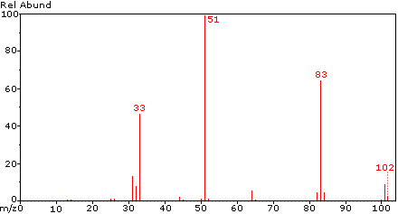
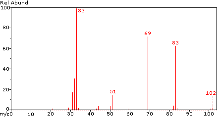

The mass spectra of two constitutional isomers are shown here. Both are gases at room temperature. The molecular ion is the small peak at m/z = 102 amu.


Isomer 1
Isomer 2
This script written by The Edvibe Team, edvibe.co.ke. Please send comments and corrections to contact@edvibe.co.ke.